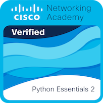

Application Full-Stack
ShopStock
Système de gestion de stock et d'inventaire avec authentification sécurisée et base de données relationnelle dans le cloud.
Développeur passionné par la conception d'applications web, le backend (Python, PostgreSQL, Supabase) et l'écosystème Linux. J'aime transformer des besoins concrets en solutions propres, testées et sécurisées.
Applications web, outils backend et intégrations réalisés en projets personnels et associatifs.
Système de gestion de stock et d'inventaire avec authentification sécurisée et base de données relationnelle dans le cloud.
Interface permettant d'organiser, filtrer et gérer une collection de jeux vidéo avec persistance des données.
Développement web, intégration de l'identité visuelle et gestion de contenu numérique pour l'association lilloise.
Implémentation d'un interpréteur de commandes (Shell POSIX) et création d'outils interactifs (calculateur de moyenne dynamique).
Mon environnement de travail au quotidien.
Validations officielles de mes compétences techniques et réglementaires.

Cisco Networking Academy / Python Institute

Cisco Networking Academy / NDG
ANSSI — Agence nationale de la sécurité des systèmes d'information
Voir l'attestation PDFCNIL — Protection des données personnelles
Voir les attestations